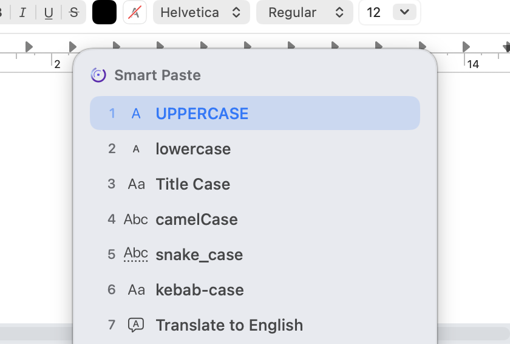

↯
Fast
It stays out of your way, then appears the moment you need it.
Cliptika
Save what you copy, find it instantly, capture and act on screenshots, and use Smart Paste and Cliptika Lens to get more done — without touching the mouse.
Available on the Mac App StoreFree to download · Mac, macOS 14.6 or later

One shortcut. The right actions — wherever you’re working.
Cliptika brings the everyday pieces of your workflow closer, without getting in the way.
Cliptika remembers what you copy — text, links, images, and files — so you can search and reuse it in seconds, without digging back through old windows or chats.

Smart Paste looks at what you just copied and offers exactly the actions that make sense for it — clean up text, reformat a path, or translate it — right where you’re about to paste.
Press one shortcut anywhere on your Mac and Cliptika Lens shows exactly the actions that make sense right now — a file in Finder, a folder, or a line of text — all without touching the mouse.
Capture part of your screen, and Cliptika keeps it — searchable, with the text inside it extracted automatically, so you can find and reuse it later without opening the image at all.
Capture a detail. Find the text inside it later.
Capture and OCR are current Cliptika features.Everyday clipboard history stays temporary. Pin the things you actually want to keep, name them, and group them into Collections you can find again anytime.

It stays out of your way, then appears the moment you need it.
Designed specifically for Mac, with focused controls that feel at home.
Your clipboard content stays on your Mac, with no account or analytics.
Useful actions appear because they make sense for what you’re doing.
Text, screenshots, links, images, paths, projects, and repeated content.
Small actions add up when they’re always one shortcut away.
Copy useful material, find it again instantly, then pin the important ones into a Collection.
Clean up, transform, or translate text with Smart Paste, then keep writing.
Capture a detail now and find the image or extracted text later.
Name an address, a command, or a frequent reply and retrieve it without searching old chats.
Cliptika has no account, no analytics, and no third-party SDKs. What you copy, capture, and save stays on your Mac. Permissions are optional and can be changed anytime in System Settings.
Read the full Privacy Policy →Get clipboard history, Smart Paste, and Cliptika Lens free on the Mac App Store. A few advanced actions are part of Cliptika Pro, unlockable anytime.
Available on the Mac App Store